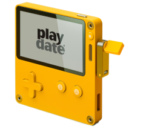
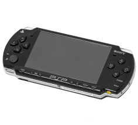
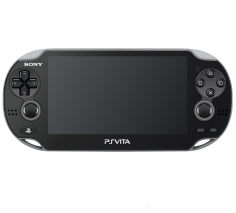
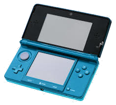

handheld consoles |
|---|
|  |
the playdate is pretty much a handheld console with a crank. has many games but the bad thing is its a tad expensive and no backlight. |
7/10 |
|  |
the psp is almost a ps2 on the go. the graphics are decent and for a little while had movies to buy for it.it also played all sorts of media you put on the memory stick. pretty decent console |
8/10 |
|  |
this console is very similar to the psp but games with slightly better graphics and added cameras to take pictures.its a neat little console. |
7.5/10 |
|  |
nintendos last handheld console before the nintendo switch. had some pretty fun games alongside some first-party nintendo games. it had these ar cards that let you play different minigames i thought was pretty neat. overall a good console |
8/10 |